Extending OWL2 Property Constructs with OWLIM Rules
Table of Contents
Intro
While OWL2 has very powerful class constructs, its property constructs are quite weak. We propose several extensions that we found useful when making:
- CIDOC CRM Fundamental Relations Search for the British Museum
- Appropriate compositions of BTG, BTP, BTI relations for the Getty Vocabularies
Existing Property Constructs
OWL2 Property Constructs include the following. Below we use pN for premises, q for conclusion. prop path is a SPARQL 1.1 property path, := means "equivalent to" and <= means "implied by". We provide an illustration, where the conclusion is in red
| construct | prop path | illustration |
| Symmetric (self-inverse) | q := ^q | 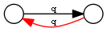 |
| Inverse | q := ^p |  |
| Disjunction (parallel composition) | q <= p1 | p2 | 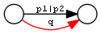 |
| Chain (sequential composition) | q <= p1/../pN | 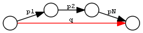 |
| Transitive closure | q <= p+ | 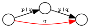 |
The corresponding OWL2 axioms (in RDF Turtle) are:
q a owl:SymmetricProperty. q owl:inverseOf p. p1 rdfs:subPropertyOf q. p2 rdfs:subPropertyOf q. q owl:propertyChainAxiom (p1..pN). p rdfs:subPropertyOf q. q a owl:TransitiveProperty.
New Property Constructs
Below we use pN for premises, r for restriction (which is just another premise), tN for types, q for conclusion. prop path uses the following additional constructs:
p & r: property conjunction (restriction): holds between two nodes when both properties connect the same nodes[t1] p [t2]: type restriction: holds when the source node has type t1 and the target node has type t2 (shown inside the node)
| construct | name | prop path | illustration |
| Extension on the right | transitiveOver | q <= q / p |  |
| Extension by conjunction on the right | TransitiveOverRestr | q <= (q / p) & r | 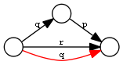 |
| Extension on the left | transitiveLeft | q <= p / q | 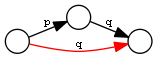 |
| Chain of fixed length 2 | PropChain | q <= p1 / p2 | 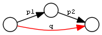 |
| Conjunction (restriction by property) | PropRestr | q <= p & r | 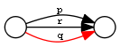 |
| Chain and restriction by property | PropChainRestr | q <= (p1 / p2) & r | 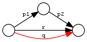 |
| Restriction by two typechecks | TypeRestr | q <= [t1] p [t2] | 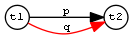 |
| Restriction by 1 typecheck | Type1Restr | q <= [t1] p | 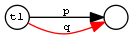 |
| Chain and typecheck | PropChainType2 | q <= p1 / p2[t2] |  |
| Chain, typecheck and restriction | PropChainRestrType2Restr | q <= (p1 / p2[t2]) & r | 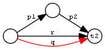 |
Note: PropRestr is a conjunction of two properties. We call the first one premise and the second one restriction only for stylistic reasons, to better match PropChainRestr.
Representation
We represent the constructs as axioms (in RDF Turtle):
q ptop:transitiveOver p. x a ptop:TransitiveOverRestr; ptop:premise p; ptop:restricton r; ptop:conclusion q. q ptop:transitiveLeft p. x a ptop:PropChain; ptop:premise1 p1; ptop:premise2 p2; ptop:conclusion q. x a ptop:PropRestr; ptop:premise p; ptop:restricton r; ptop:conclusion q. x a ptop:PropChainRestr; ptop:premise1 p1; ptop:premise2 p2; ptop:restricton r; ptop:conclusion q. x a ptop:TypeRestr; ptop:premise p; ptop:type1 t1; ptop:type2 t2; ptop:conclusion q. x a ptop:Type1Restr; ptop:premise p; ptop:type1 t1; ptop:conclusion q. x a ptop:PropChainRestrType2Restr; ptop:premise1 p1; ptop:premise2 p2; ptop:restricton r; ptop:type2 t2; ptop:conclusion q.
- The lowercase constructs are simple relations between properties, similar to owl:inverseOf.
- For the uppercase constructs we use specific structures, distinguished by a particular type (eg ptop:PropChain) and using specific slot names for the construct's constituents. TODO: but the slot names are the same across constructs, which causes lower specificity and slower execution.
This is in contrast to owl:propertyChainAxiom, which uses a general structure (rdf:List):
- The benefit of our approach is that it can be implemented more efficiently: propertyChainAxiom needs to use intermediate nodes and edges in order to unroll the rdf:List representing the chain
- The disadvantage is that it allows only constructs of limited length. But have you seen in practice an owl:propertyChainAxiom with a chain longer than 2?
Implementation
We implement these constructs using OWLIM Rules, which has the benefit of incremental retract: when a premise is deleted, its unsupported conclusions are deleted, recursively. This is possible since the rules are simple enough (eg don't include arithmetics or comparisons), so they can be executed "backwards" during retraction. We show the implementation only of the last (most complicated) rule.
Id: ptop_PropChainRestrType2Restr t <rdf:type> <ptop:PropChainRestrType2Restr> t <ptop:premise1> p1 t <ptop:premise2> p2 t <ptop:restriction> r t <ptop:type2> t2 t <ptop:conclusion> q x p1 y y p2 z z <rdf:type> t2 x r z ---------------- x q z
This could also be implemented with RIF or N3 Rules. But SPIN cannot be used because the rules are recursive, unless one is willing to iterate until no more conclusions are inferred.
Notes and Examples
transitiveOver
It all started with ptop:transitiveOver, which has been part of Ontotext's PROTON ontology since 2008(?). This is better than owl:TransitiveProperty for two reasons:
- It's more general: q is a TransitiveProperty iff it's transitiveOver itself:
q a owl:TransitiveProperty <=> q ptop:transitiveOver q
ptop:transitiveOver is more general because you could different properties with it. For example, the canonical inferencing of types along the class hierarchy can be expressed as:
rdf:type ptop:transitiveOver rdfs:subClassOf
Note: SymmetricProperty is a specialziation of inverseOf in an analogous way:
q a owl:SymmetricProperty <=> a owl:inverseOf a
- It allows more efficient implementation of transitive closures.
Transitive properties are usually implemented as transitive closure over a basic step property. For example, skos:broaderTransitive is based on skos:broader and is usually implemented as
skos:broader rdfs:subPropertyOf skos:broaderTransitive. skos:broaderTransitive a owl:TransitiveProperty.
Now consider a chain of skos:broader between two nodes. owl:TransitiveProperty has to consider every split of the chain, and infers the same closure between the two nodes multiple times, leading to quadratic inference complexity. The following axioms are more efficient, since they seek to extend the chain only at the right end:
skos:broader rdfs:subPropertyOf skos:broaderTransitive. skos:broaderTransitive ptop:transitiveOver skos:broader.
transitiveLeft
transitiveLeft is just like transitiveOver, but extends the chain of q by using p on the left, not on the right. For example, the first three axioms below say that broaderPartitiveExtended is a chain of broaderPartitive, followed by any number of broaderPartitive|broaderGeneric on the right. The last axiom also allows any number of broaderGeneric on the left.
gvp:broaderPartitive rdfs:subPropertyOf gvp:broaderPartitiveExtended. gvp:broaderPartitiveExtended ptop:transitiveOver gvp:broaderGeneric. gvp:broaderPartitiveExtended ptop:transitiveOver gvp:broaderPartitive. gvp:broaderPartitiveExtended ptop:transitiveLeft gvp:broaderGeneric.
So in effect broaderPartitiveExtended is any chain of broaderPartitive|broaderGeneric, including at least one broaderPartitive. You don't need to bother with transitiveLeft if you are extending a single property, but you may need it if you are mixing two.
TransitiveOverRestr
To understand this example, you need to know a bit about the LOD representation of the Getty Vocabularies:
- TGN places form a hierarchy using broaderPartitive
- AAT concepts (including place types) form a hierarchy using broaderGeneric (mostly)
- TGN place is connected to its AAT place type using broaderInstantial
We first defined broaderInstantialExtended as a closure of broaderInstantial over broaderGeneric (only on the right):
gvp:broaderInstantial rdfs:subPropertyOf gvp:broaderInstantialExtended. gvp:broaderInstantialExtended ptop:transitiveOver gvp:broaderGeneric.
But we faced a problem: some broaderGeneric are better suited for this purpose than others. AAT concepts (including place types) have a Preferred (primary) hierarchy, and often have secondary (Non-Preferred) hierarchies, eg:
| place type | Preferred Hierarchy | Non-Preferred Hierarchy |
|---|---|---|
| continents | Built Environment (Hierarchy Name) | Associated Concepts |
| (eg Europe) | . Settlements and Landscapes | . scientific concepts |
| .. landscapes (environments) | .. physical sciences concepts | |
| … natural landscapes | … earth sciences concepts | |
| …. landforms (terrestrial) | …. earth features | |
| ….. landmasses | ….. physical features | |
| …… continents | …… hypsographic features | |
| ……. terrestrial features (natural) | ||
| …….. landforms (terrestrial) | ||
| ……… continents | ||
| inhabited places | Objects Facet | Agents Facet |
| (eg Sofia) | . Settlements and Landscapes | . organizations (groups) |
| .. inhabited places | .. administrative bodies | |
| … political administrative bodies | ||
| …. <political administrative bodies by general designation> | ||
| ….. inhabited places |
While the Preferred hierarchy is useful, the secondary hierarchy is not so useful: few people would think of Europe as a "scientific concept" or Sofia city as an "organization". So we found it better to define broaderInstantialExtended as a closure over broaderGeneric restricted by broaderPreferred:
[a ptop:TransitiveOverRestr; ptop:conclusion gvp:broaderInstantialExtended; ptop:premise gvp:broaderGeneric; ptop:restriction gvp:broaderPreferred].
PropChain
PropChain is like owl:propertyChainAxiom but for chains of length 2 (have you seen longer chains used in practice?) The advantage is more efficient implementation, as propertyChainAxiom needs to use intermediate nodes and edges in order to unroll the rdf:List representing the chain.
You don't need to rewrite your owl:propertyChainAxioms to use ptop:PropChain: you can convert with a rule like this:
Id: ptop_PropChainByPropertyChainAxiom p <owl:propertyChainAxiom> l1 l1 <rdf:first> p1 l1 <rdf:rest> l2 l2 <rdf:first> p2 l2 <rdf:rest> <rdf:nil> ---------------- t <rdf:type> <ptop:PropChain> t <ptop:premise1> p1 t <ptop:premise2> p2 t <ptop:conclusion> p
But if your OWLIM ruleset has a general implementation of owl:propertyChainAxiom, it needs to be modified to apply to chains longer than 2 only.
PropRestr
OWL2 does not allow the expression of conjunctive properties, something that provided original motivation for these extensions, while working on CRM Fundamental Relations.
For example, iso:broaderGeneric can be defined as a restriction of gvp:broaderGenericExtended to skos:broader (i.e. directly connected skos:Concepts):
[a ptop:PropRestr; ptop:premise skos:broader; ptop:restricton gvp:broaderGenericExtended; ptop:conclusion iso:broaderGeneric].
PropChainRestr
PropChainRestr is a combination of PropChain and PropRestr. For example, broaderPreferredExtended is the transitive closure of broaderPreferred, but restricted to broaderExtended.
[a ptop:PropChainRestr; ptop:premise1 gvp:broaderPreferredExtended; ptop:premise2 gvp:broaderPreferred; ptop:restriction gvp:broaderExtended; ptop:conclusion gvp:broaderPreferredExtended].
TypeRestr
TypeRestr is a restriction of a property to connect nodes of specified types. (Type1Restr is a very simple modification where we restrict only the source node.) For example, skos:broader is a restriction of gvp:broader to only skos:Concepts; iso:subordinateArray is a restriction of gvp:narrower from skos:Concept to iso:ThesaurusArray.
[a ptop:TypeRestr; ptop:premise gvp:broader; ptop:type1 skos:Concept; ptop:type2 skos:Concept; ptop:conclusion skos:broader]. [a ptop:TypeRestr; ptop:premise gvp:narrower; ptop:type1 skos:Concept; ptop:type2 iso:ThesaurusArray; ptop:conclusion iso:subordinateArray].
PropChainRestrType2Restr
There's nothing fundamentally important about this pattern. But we found it useful in order to infer skos:broader as a restriction of gvp:broaderExtended over directly connected pairs of skos:Concept (no intervening skos:Concept). We use an auxiliary property gvp:broaderNonConcept, which connects skos:Concept to non-concepts (it itself is implemented with PropChainRestrType2Restr).
[a ptop:PropChainRestrType2Restr; ptop:premise1 gvp:broaderNonConcept; ptop:premise2 gvp:broader; ptop:restriction gvp:broaderExtended; ptop:type2 skos:Concept; ptop:conclusion skos:broader].
The power of our approach is that you can easily define more constructs for any rule patterns that are important in your situation.